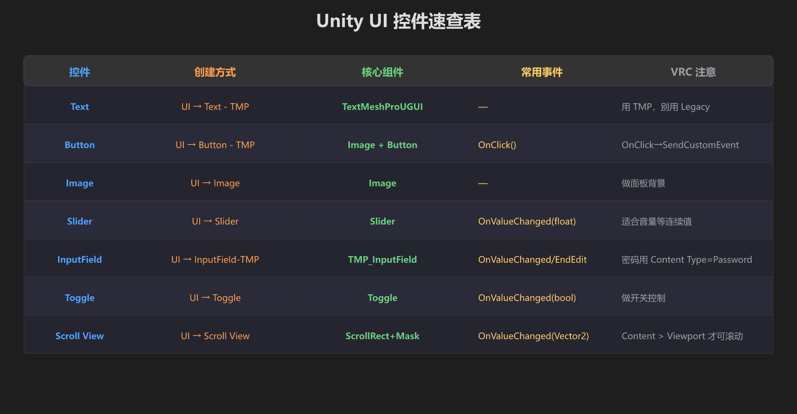
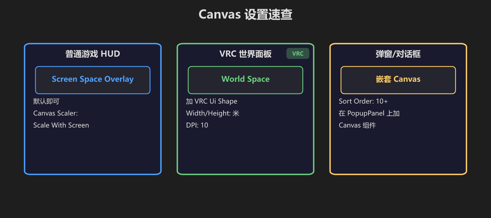
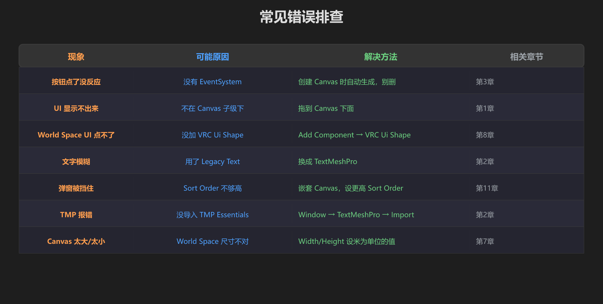
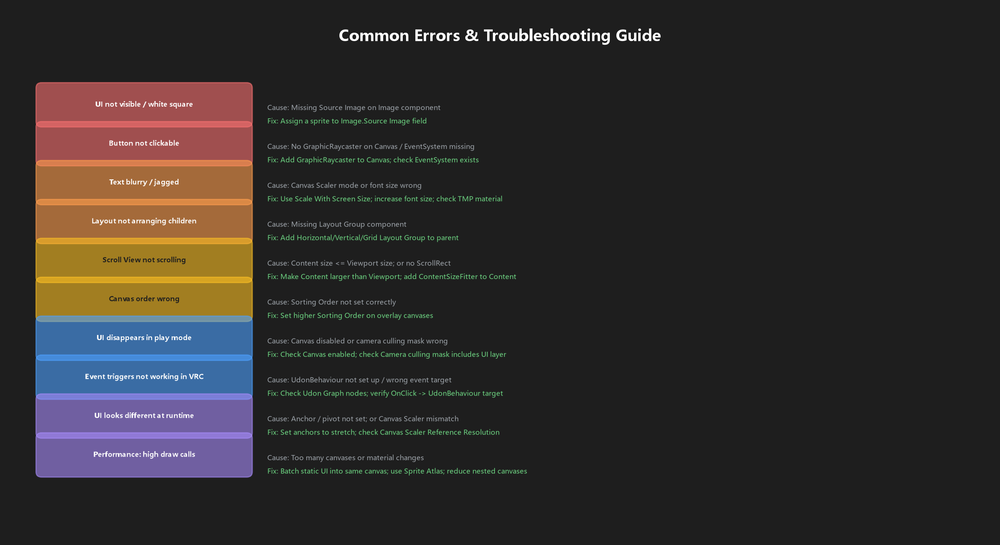
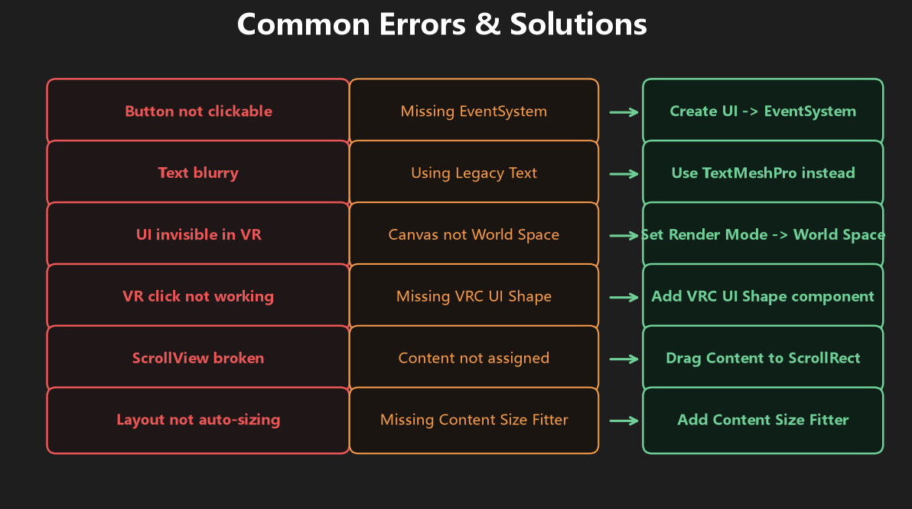
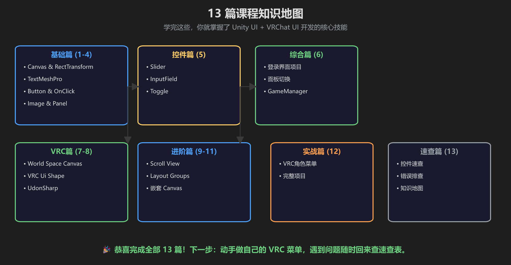

第 13 篇：速查表 — 13 篇要点一页通
忘了怎么用？来这里快速查。
📋 控件速查表

7 种控件的创建方式、核心组件、常用事件、VRC 注意事项
🖼️ Canvas 设置速查

普通 HUD / VRC 面板 / 弹窗 — 三种场景的 Canvas 设置
🔧 常见错误排查

7 个常见问题 + 原因 + 解决方法 + 对应章节

问题 → 原因 → 解决方案 三段式速查，适合打印或贴桌面上

VRChat UI 常见错误，重点检查 Render Mode、VRC Ui Shape、Layer、EventSystem
🗺️ 知识地图

13 篇课程全景：基础→控件→综合→VRC→进阶→实战→速查
遇到 VRChat 组件参数不确定时，去D:\xitong\文档\资料\教程\vrc离线手册查components/vrc_uishape.html、udon/ui-events.html和worlds/whitelisted-world-components.html。
课程结束！你已掌握：
- Canvas 和 RectTransform
- TextMeshPro 文字系统
- Button / Slider / InputField / Toggle 交互控件
- Image 和 Panel 视觉元素
- Scroll View 滚动视图
- Layout Groups 自动排列
- 嵌套 Canvas 层级控制
- World Space Canvas 和 VRC 交互
🎉 下一步：动手做自己的 VRC 菜单！遇到问题随时回来查速查表。